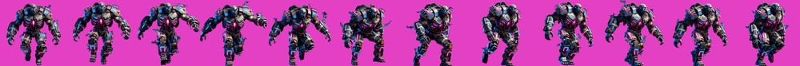
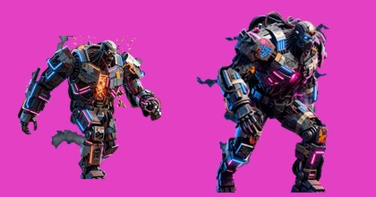

12 幀走路循環

軍規義體植入的巨型改造體：液壓戰鬥義肢、剖開的胸腔能量核心（洋紅脈動）、焊死的戰術面罩＋青藍義眼、後腦拖著資料線與冷卻管、關節洩出蒸氣

左：一般重裝殭屍 brute（44px） 右：Boss（78px）—— 體型與剪影差異一眼分得出
- 幀間差異
- 23.8（沉重踏步、重心大幅晃動）
- 脫離主體的殘留
- 0
- 底部占寬
- 23%（雙腳站姿，無地面）
- 著墨佔畫布
- 94%
修了一個不用錢的問題
- 第一次送出被擋：
400 Prompt length exceeds the maximum allowed length of 4096。沒有計費（生成前就被拒絕）。
- 原因是我把「踩坑筆記」寫在風格基底檔裡——那些註解對「下次有人要改 prompt」很有價值，但不該吃掉模型的 prompt 額度。
- 改法：註解改成
# 開頭，新增 prompts/build_prompt.py 在送出前濾掉。組合後 2054 字元，留足空間給主體描述。筆記完整保留在檔案裡。
通過的話，剩下 7 隻
- 腐爛領主／怒吼者／召喚祭司／暴怒巨獸／瘟疫魔王／混沌破壞者／終焉君王
- 7 支 × $0.32 = $2.24 ｜ 本試樣 $0.32 ｜ 累計美術 $15.04
- Grok 額度正常